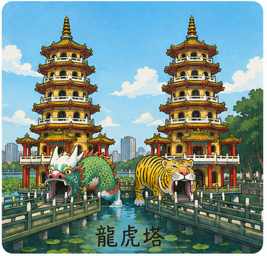
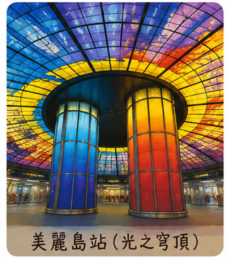
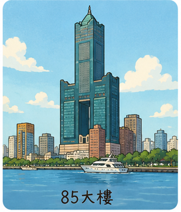
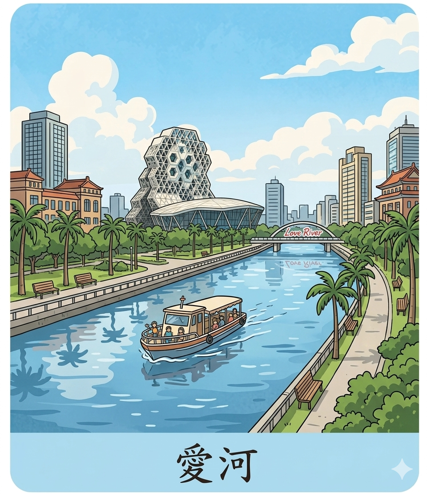
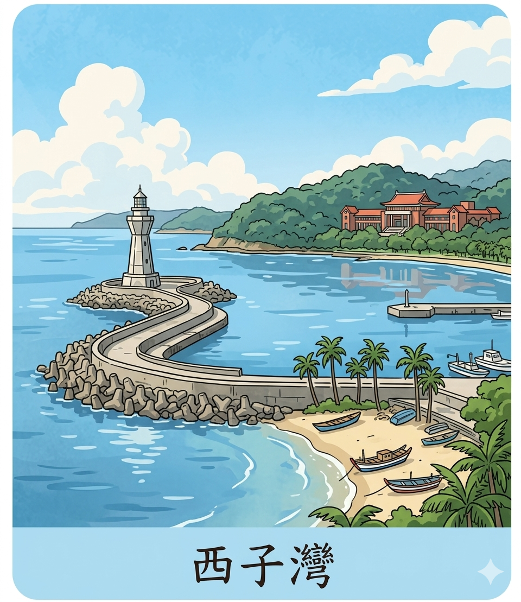

探索港都魅力 · 感受熱情南方
點擊圖片或名稱查看詳細介紹

蓮池潭中最具代表性的建築，龍喉進、虎口出，象徵消災解厄。

「光之穹頂」為全球最大單件玻璃藝術作品，絢麗奪目。

高雄最高地標，74樓觀景台可360度俯瞰港都美景。

高雄浪漫地標，河畔步道、愛之船與璀璨夜景聞名。
製作這個網頁的心得與學習歷程，記錄高雄景點介紹的設計過程。

夕陽、沙灘、巨港，遠眺旗津與台灣海峽的絕美海灣。
龍虎塔位於高雄市左營區蓮池潭畔，建於1976年，是蓮池潭最具代表性的地標建築，也是臺灣觀光旅遊的經典象徵之一。塔高七層，分為龍塔與虎塔，兩塔之間由彎曲的九曲橋相連，造型獨特且色彩極度鮮豔，紅、黃、藍、綠等色調交織，充滿東方傳統建築的華麗之美，無論從哪個角度拍攝都能獲得極具視覺衝擊力的畫面。
民間習俗流傳著「龍喉進、虎口出」的有趣說法，遊客可從龍口進入、再從虎口步出，象徵將一身晦氣留在虎口之中，迎來嶄新的祥瑞之氣，因此每年吸引無數國內外遊客前來體驗這項儀式。塔內牆面繪有精緻的壁畫，描繪二十四孝、十殿閻羅等中國民間故事與倫理典故，不僅具有高度的藝術價值，也蘊含深刻的教育與文化意義，非常適合親子共遊。
蓮池潭周邊還有春秋閣、孔廟、北極亭、啟明堂等眾多景點，湖畔步道平緩宜人，可以騎自行車或散步繞潭一周，感受南臺灣的悠閒氛圍與傳統文化底蘊。潭中偶爾可見烏龜爬上石頭曬太陽，增添幾分自然趣味。建議安排半日遊的時間，細細品味這座融合宗教、建築與自然景觀的經典勝地。
美麗島站位於高雄市中正路與中山路交叉口，為高雄捷運紅線與橘線的重要交會站，每日進出人次龐大，是高雄交通網絡的核心樞紐。這座車站曾獲選為全球最美地鐵站之一，更是許多國際旅客來臺指定造訪的景點。站內最引人注目的公共藝術作品「光之穹頂」，由義大利籍藝術家 Narcissus Quagliata 耗費數年親手創作，直徑達30公尺，是全球最大單件玻璃藝術作品，氣勢磅礴。
光之穹頂整體結構分為四大主題區塊：水、土、光、火，分別象徵創造、成長、輝煌與毀滅的生命循環，以超過4500片手工彩色玻璃精密拼貼而成，色彩斑斕炫麗，光線穿透時產生夢幻般的光影變化，站在穹頂下方仰望，令人感到無比震撼與感動。站內還設有「飛翔之窗」、「歷史之窗」等系列公共藝術作品，讓整座車站本身就是一座免費開放的當代美術館。
車站出口直接連結六合觀光夜市，步行即可品嚐海產粥、木瓜牛奶等經典小吃。周邊還有南華商圈、中央公園等休憩去處，白天欣賞藝術、傍晚逛夜市吃美食，是來高雄旅遊絕對不能錯過的經典行程。
高雄85大樓位於高雄市苓雅區自強三路，樓高378公尺、共85層樓，1997年完工時為全臺灣最高的摩天大樓，至今仍是高雄天際線中最引人注目的地標建築。大樓由知名建築師李祖原一手設計，其獨特的外型猶如一個巨大的「高」字，巧妙呼應城市名稱，極具在地文化意象與設計巧思。
74樓的觀景台「南台灣之巔」是每位遊客必訪的熱門景點，搭乘高速透明電梯僅需43秒即可直達頂層，電梯上升過程中能感受速度與視野的雙重震撼。360度環景落地窗讓視野毫無死角，白天可俯瞰高雄市區街道縱橫、壽山翠綠、西子灣碧藍與旗津海岸線，天氣晴朗時甚至能遠眺屏東大武山的巍峨輪廓；傍晚時分則可欣賞夕陽沒入台灣海峽的壯麗景色，入夜後萬家燈火璀璨，城市夜景盡收眼底。
大樓內部設有君鴻國際酒店、商務辦公室與購物商場，提供住宿、餐飲與購物一站式服務。夜晚外牆的LED燈光秀定時展演，與周圍城市燈火相互輝映，無論從愛河畔或西子灣遠望，85大樓都是高雄最閃耀的都市焦點。
愛河是高雄最具代表性的生命之河，全長約12公里，從北到南蜿蜒貫穿高雄市區，最終注入高雄港海域。早年因工商業快速發展而遭受嚴重污染，一度成為眾人避之唯恐不及的臭水溝。然而經過數十年的積極整治與綠化工程，愛河徹底脫胎換骨，水質清澈、河岸綠意盎然，如今已成為高雄最浪漫、最受歡迎的觀光地標，見證了這座城市從工業重鎮轉型為宜居港都的動人歷程。
河畔兩岸設有完善的自行車道與寬敞人行步道，沿途咖啡館、特色餐廳、文創小店林立，無論是白天散步或夜晚小酌都極具情調。搭乘「愛之船」觀光遊艇是體驗愛河之美的最佳方式，航線從中正橋到高雄橋之間的精華水域，沿途可欣賞高雄橋的拱型燈光、河岸建築的璀璨倒影與城市天際線，夜晚船行水上、微風拂面，浪漫指數破表。
每年元宵節前後舉辦的「高雄燈會」即在愛河沿岸盛大登場，數萬盞造型燈飾將河岸與橋樑點綴得璀璨奪目，水面上還有大型主燈與水舞秀表演，吸引數百萬國內外遊客共襄盛舉。此外，愛河周邊還有高雄市立歷史博物館、高雄流行音樂中心、駁二藝術特區等景點，適合安排一整天的城市漫旅行程。
西子灣位於高雄市鼓山區，是一處視野極度開闊的天然海水浴場與港灣，以「西灣夕照」這項美景聞名全臺灣，名列高雄八大景之一。每當黃昏時分，橘紅色的夕陽緩緩沉入台灣海峽，將整片海面染成閃爍的金黃色，遠方的旗津燈塔與往來的船隻輪廓在逆光中形成剪影，構成一幅如詩如画的絕美畫面，每日傍晚皆有大批遊客與攝影愛好者專程前來捕捉這動人時刻。
西子灣旁的中山大學依山傍海、校園景觀獨一無二，被譽為全臺灣最美的山海大學，學生上課就能眺望海景，令人稱羨。附近的打狗英國領事館為國家二級古蹟，這棟紅磚建築充滿十九世紀英式殖民風格，坐落於小山丘之上，是眺望高雄港與西子灣夕陽的絕佳制高點。館內設有展覽空間與文創 café，參觀古蹟之餘還能品嚐下午茶，感受歷史與悠閒交織的氛圍。
從西子灣渡輪碼頭可搭乘渡輪前往旗津，航程僅約五分鐘，抵達後可大啖新鮮平價的海產料理、騎自行車沿海岸線悠遊，或登上旗後砲台俯瞰整個高雄港口的壯闊景象。西子灣周邊還有雄鎮北門、哨船頭公園等景點，建議安排午後時分前來，先逛古蹟再賞夕陽，最後搭渡輪去旗津吃海鮮，完美的高雄半日遊就此展開。
在數位科技發達的今天，「旅行」的定義早已不止於雙腳的抵達，更在於資訊與感官的延伸。近期，我嘗試挑戰了一項跨領域的個人專案：利用 AI 工具一條龍架設一個介紹觀光景點的互動網站，並將其開源、部署至 GitHub。在這段過程中，我沒有撰寫大量的原始碼，也沒有精通樂理或專業繪圖，而是扮演「AI 導演」的角色，藉由精準的指令（Prompt），讓 AI 幫我搞定程式碼、音樂、圖片與景點敘述。以下是我這場科技與創意激盪的實踐心得。
對於非網頁工程師而言，架設網站最底層的痛點就是程式碼。這次我使用 AI 語言模型作為我的「虛擬架構師」。
我先提供明確的規格：「請幫我用 HTML5、CSS3 與 JavaScript 建立一個響應式的景點介紹網站，風格要現代且乾淨，具備導覽列、景點卡片、互動地圖與影音播放器。」
AI 的表現令人驚艷：
效率驚人：短短幾秒鐘，它就吐出了結構清晰的網頁骨架，甚至連 CSS 網格佈局（Grid）與動畫效果都寫好了。
debug 助手：當我遇到元件跑版或 JavaScript 監聽事件失效時，我只需將錯誤訊息丟回，AI 就能精準指出問題並提供修正後的程式碼。
透過這種互動，寫程式不再像在黑暗中摸索，而像是用中文與專家對話、組裝積木。
一個景點網站的靈魂，在於它所傳遞的視覺與文字溫度。
1. 景點敘述的深度與廣度
在撰寫景點介紹時，AI 展現了強大的資料統整與文本潤飾能力。以「高雄西子灣」為例，我要求 AI 撰寫一段兼具歷史底蘊與浪漫氛圍的導覽詞。它不僅生動描繪了「西灣夕照」的波光粼粼，還貼心地劃分出「歷史沿革」、「最佳觀夕景點」與「交通指南」等區塊，資訊語氣流暢且極具感染力，省去了大量查閱文獻與重新排版的時間。
2. 視覺風格的統一與創新
為了解決版權問題並追求獨特的視覺風格，我使用了 AI 圖像生成工具。我將真實的景點照片作為參考，並輸入「手繪插畫風格、繪本感、明亮溫暖的藍天白雲、高雄流行音樂中心/西子灣」等關鍵字。AI 生成出來的圖片帶著細膩的筆觸與飽滿的色彩，既保有景點的辨識度，又賦予了網站一種童話般的文藝氣息。
這次專案最讓我驚喜的，是 AI 在音訊生成（Audio Generation）上的突破。
為了讓使用者在瀏覽網站時有沉浸式的體驗，我利用 AI 音樂生成工具為景點製作背景音樂。我輸入了情緒關鍵字：「海浪、放鬆、輕快、Lo-fi 爵士、帶有夏日午後的悠閒感」。幾分鐘後，AI 便創作出了一首 30 秒、循環播放毫無違和感的自製樂曲。當使用者點擊西子灣的介紹頁面，輕柔的吉他與海浪聲隨之響起，視覺與聽覺的完美結合，讓網頁的質感瞬間提升了好幾個檔次。
當所有素材與程式碼準備就緒，最後一步就是讓它「上線」。
在 AI 的指導下，我下載了 Git，並在 GitHub 上建立了一個新的儲存庫（Repository）。
程式碼託管：透過簡單的指令，我將網頁檔案、AI 生成的圖片與音樂一併推（Push）到了 GitHub。
靜態網頁上線：接著開啟 GitHub Pages 功能。不到一分鐘，GitHub 就為我產生了一個專屬的網址。
看到自己用 AI 拼湊、溝通出來的成果，真正變成網路上任何人都能造訪的網站，那種成就感難以言喻。GitHub 不僅是一個存放檔案的地方，更是向世界展示 AI 協作能力的舞台。
這次的「AI 全能架設網站」體驗，帶給我非常深刻的震撼。在過去，要完成這樣一個包含前端設計、文案企劃、插畫繪製、音樂編曲的專案，起碼需要一個小團隊耗時數週；但在 AI 的輔助下，我獨自一人在幾天內就完成了。
「未來的門檻不再是技術，而是你的想像力與溝通能力。」AI 降低了技術的硬傷，讓我們能把精力專注在「體驗設計」與「創意發想」上。當然，AI 生成的內容偶爾仍需要人工的微調與校對，但作為一個強大的生產力放大器，它毫無疑問已經徹底改變了我們的創作模式。這次的 GitHub 專案只是一個起點，未來，我期待能與 AI 攜手探索更多科技與生活結合的無限可能。
↩ 回首頁